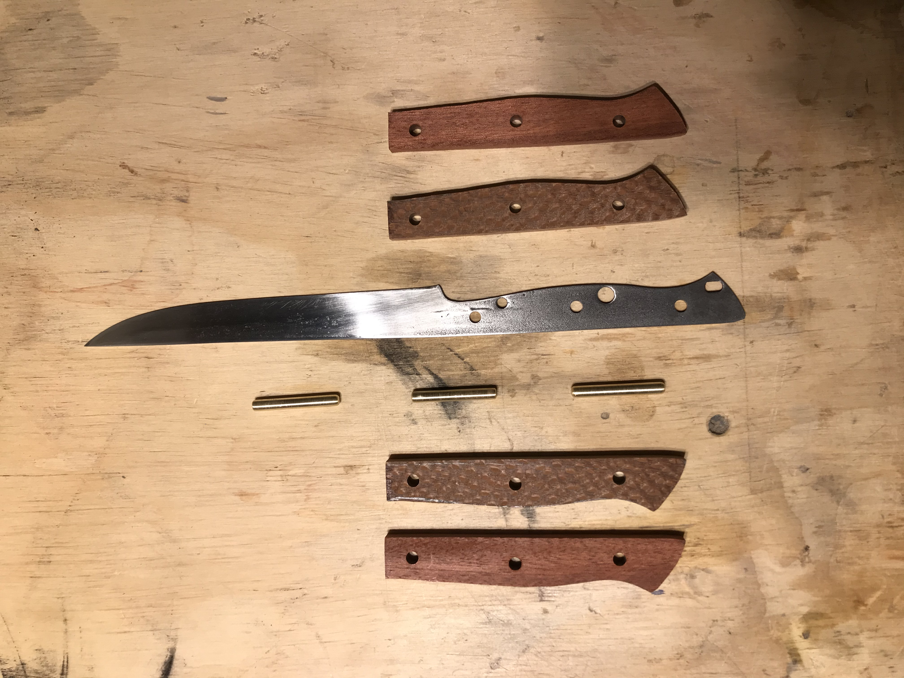
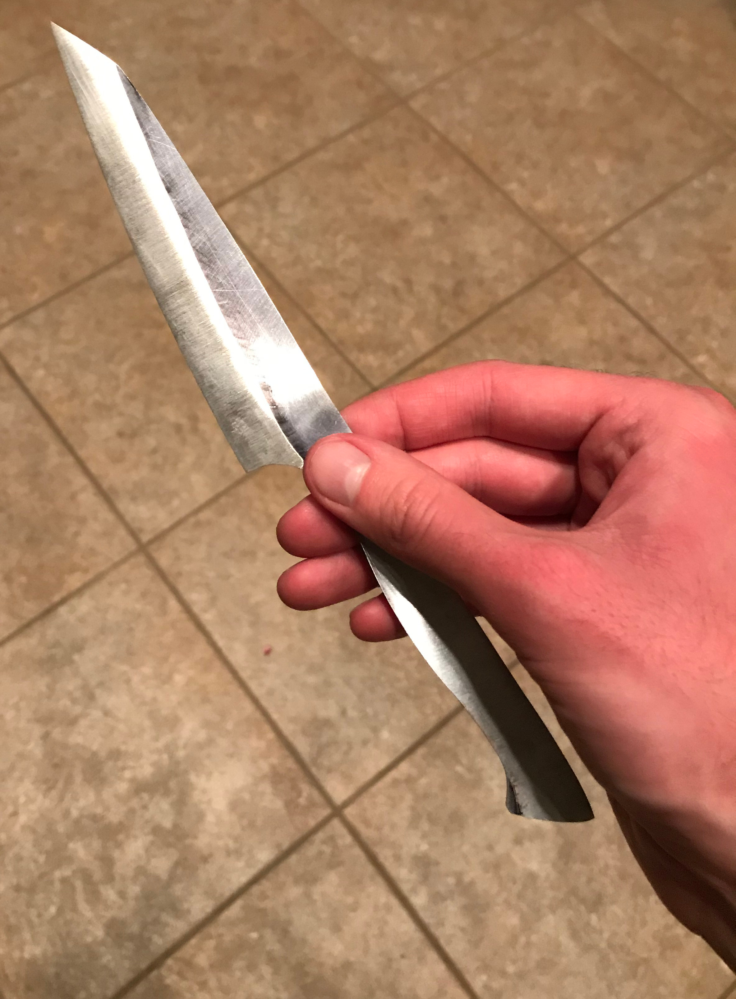

A small kitchen knife made of L6 tool steel from an old circular saw blade (acid etched) with a Wenge wood handle and brass rivets
A pair of damascus steel kitchen kinves I blacksmithed by hand forged with 10 layers of 1095 and 15n20 steel. Handles of purple heart, maple, and alder woods. Coal forge hardened and oil-quenched
An Old Ontario fillet knife whose handle I reground and made new and better with bloodwood and lacewood with brass rivets

An in progress picture of an Old Ontario fillet knife I reground and enhanced with bloodwood and lacewood handles and brass rivets

An in-progress picture of a small kiritsuke kitchen knife that I'm currently working on. L6 tool steel
A 12.5 inch chef knife made from very old L6 tool steel cut from an old sawmill blade. Handle is yellow heart with aluminum, carbon, stainless, steel, and epoxy mosaic pins